The Big Bang
The universe began expanding from an extremely hot, dense early state and has cooled ever since. It is better understood as a change involving space itself, not as an explosion from one point into pre-existing space.
EnergyWorldview
THE UNIVERSE OF TIME
Choose a point that catches your attention. Each one can become an inquiry that includes what came before, what changed, and what followed. You can begin by asking for an explanation or with a question of your own.
Start from the map above or from one turning point below.
Tools, energy, bodies, environments, power, and worldviews can overlap.
Copy the prepared inquiry and paste it into ChatGPT or another AI you use.
The complete English timeline is here. Chapters I–XI include all 160 turning points, ending not with a prediction but with questions that remain open.
CHAPTER I
13.8 billion — 55 million years ago
Time, space, matter, and life all have histories. This chapter follows the long transformation from an early hot universe to a living planet where primates appeared.
The universe began expanding from an extremely hot, dense early state and has cooled ever since. It is better understood as a change involving space itself, not as an explosion from one point into pre-existing space.
The nuclei of mostly hydrogen and helium formed. Neutral atoms appeared only about 380,000 years later; carbon, oxygen, iron, and other heavier elements would be forged much later inside stars and stellar explosions.
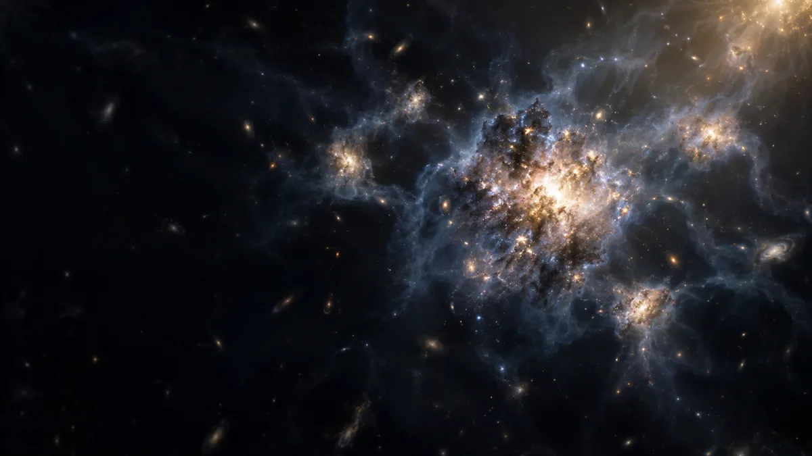
After the cosmic dark ages, the first stars ignited. Gravity gathered stars into early galaxies, creating the structures and chemical pathways from which later planets and life could emerge.
Earth formed along with the rest of the solar system. Over immense spans of time, the young molten planet cooled and developed oceans, a crust, and continents.
The leading explanation is that a massive body struck the young Earth and the Moon formed from resulting debris. The exact conditions of the impact and the details of lunar formation remain active areas of research.
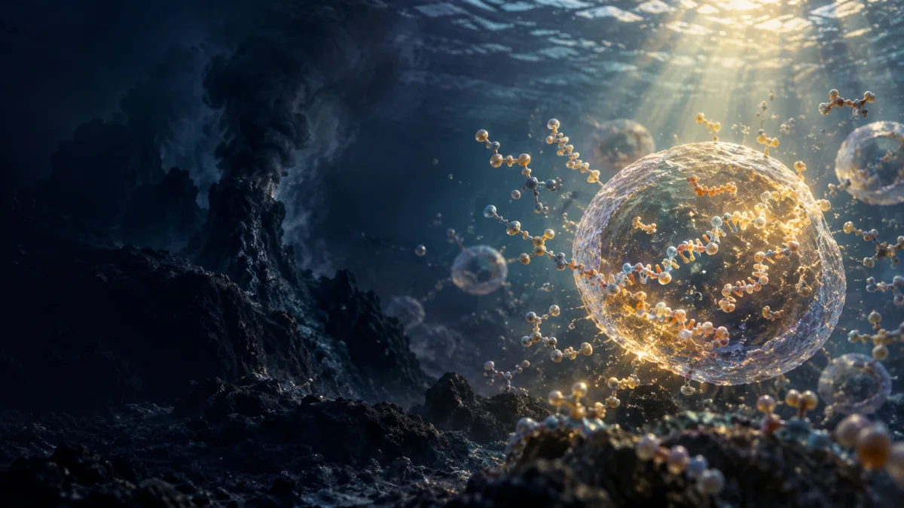
Ancient rocks preserve chemical and geological traces that may record early life. When, where, and how life began remains unresolved, and scientists continue to debate how some of the oldest evidence should be interpreted.
After oxygen-producing photosynthesis evolved and spread, atmospheric oxygen rose dramatically around 2.4 billion years ago. The origin of photosynthesis and the oxidation of the atmosphere were connected, but they were not one instantaneous event.
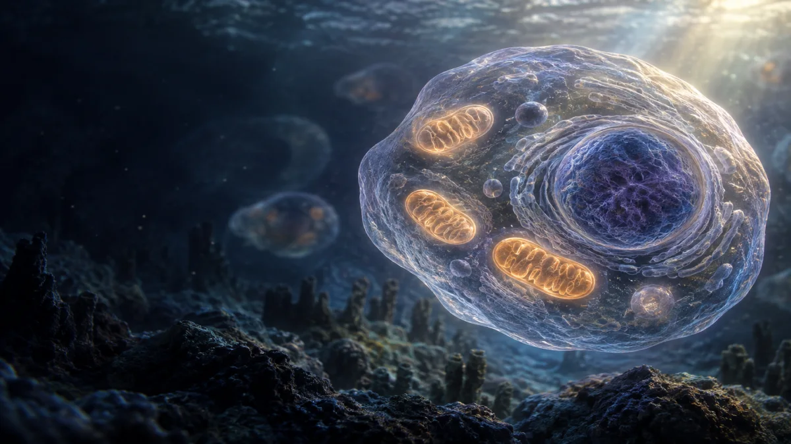
Cells with nuclei appeared. Through endosymbiosis, ancestral cells incorporated the organisms that became mitochondria, opening a path toward more complex forms of life.
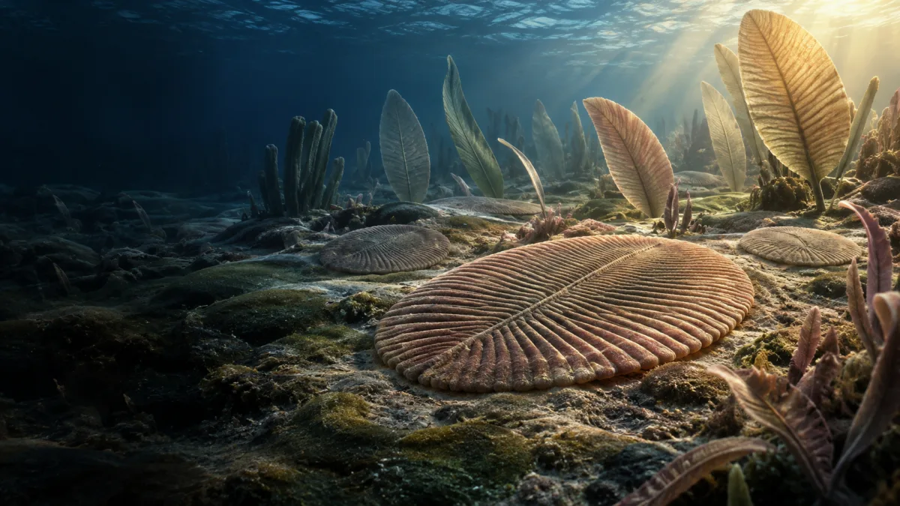
Diverse large organisms with frond-like, ribbon-like, and quilted forms spread through Ediacaran seas. They reveal the long ecological prelude that is easily missed when the story begins with the Cambrian Explosion.
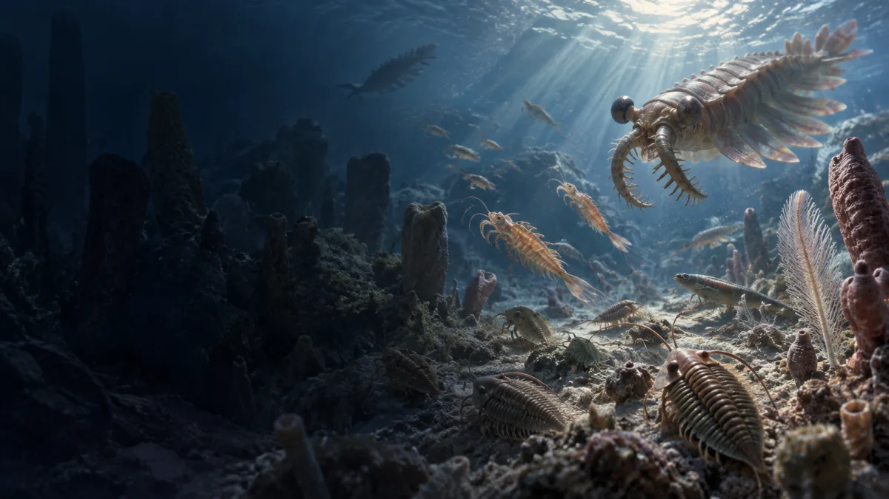
Over several tens of millions of years—brief on a geological scale—the diversity of animal fossils increased greatly. Animal lineages existed earlier, and scientists still examine interacting causes involving oxygen, ecology, and developmental biology.
Plants, followed by arthropods, expanded from water onto land. Photosynthetic green life spread across dry ground, beginning the development of terrestrial ecosystems.
Dinosaurs diversified through the Mesozoic and became dominant in many terrestrial ecosystems. Mammals were present too, generally occupying smaller ecological roles for much of this era.
A mass extinction at the K–Pg boundary, driven principally by a major asteroid impact, eliminated many groups including non-avian dinosaurs. Birds survived as one dinosaur lineage, while mammals later diversified into newly opened niches.
Small primates adapted to life in trees. Depth perception and grasping hands became part of an evolutionary inheritance that would eventually shape the human lineage.
CHAPTER II
7 million — 15 thousand years ago
Bipedalism, tools, fire, migration, symbols, and shared memory: this is not a single ladder toward modern humans, but a branching history of many human lineages.
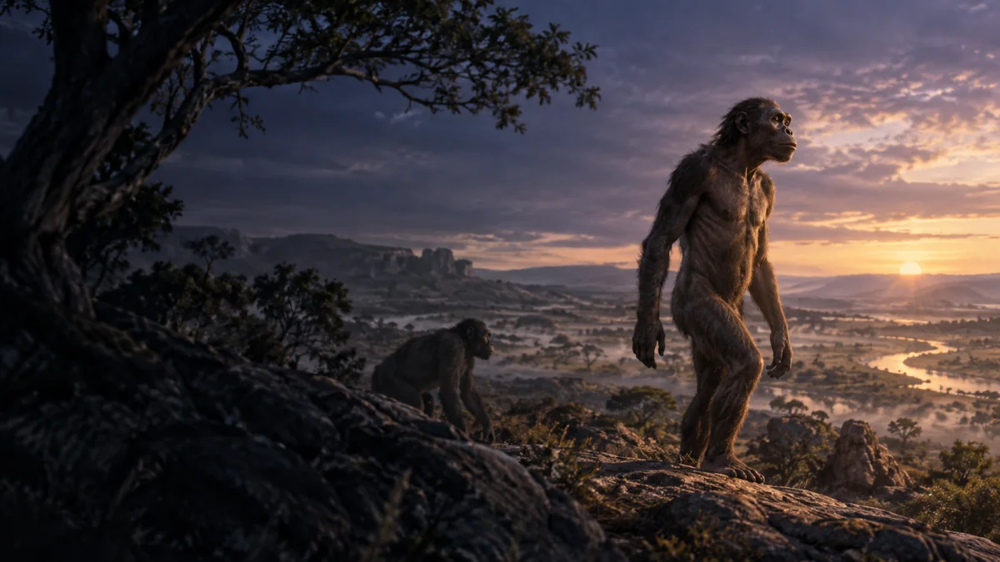
Fossils such as Sahelanthropus tchadensis come from near the time when the human and chimpanzee lineages may have diverged. Their exact place in the family tree—and the date of that divergence—remain debated.
Several australopithecine species lived in Africa. The famous fossil Lucy is about 3.2 million years old and combines adaptations for walking on two legs with features suited to climbing. Human evolution was a branching tree, not a straight staircase.
Stone tools reported from Lomekwi 3 in Kenya predate the earliest known tools associated with the genus Homo. We do not know who made them. They are the oldest evidence found so far, not necessarily the first moment any ancestor used a tool.
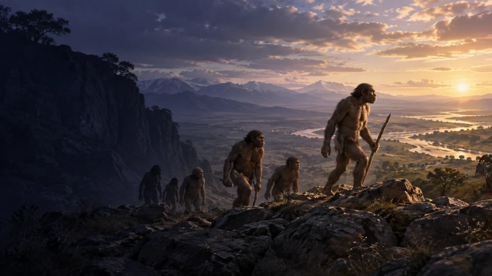
Early members of the genus Homo, often associated with Homo erectus, spread beyond Africa into Eurasia. Human history became a history of movement, adaptation, encounter, and repeated migration.
Evidence for repeated fire use becomes more common over time. Fire eventually supported cooking, warmth, protection, and life after dark. Its relationship to changes in the body and brain is important but cannot be reduced to one simple cause.
Fossils from Jebel Irhoud in Morocco are among the earliest known remains assigned to our species. Rather than appearing at one point in one place, modern human traits likely developed across connected African populations over time.
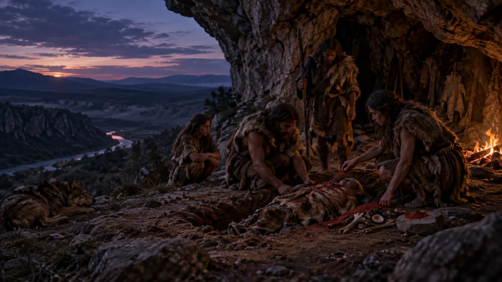
Humans sometimes placed the dead carefully in the ground, at times with pigments or objects. Not every case proves religious ritual, but these practices show memory, care, and social relationships extending beyond death.
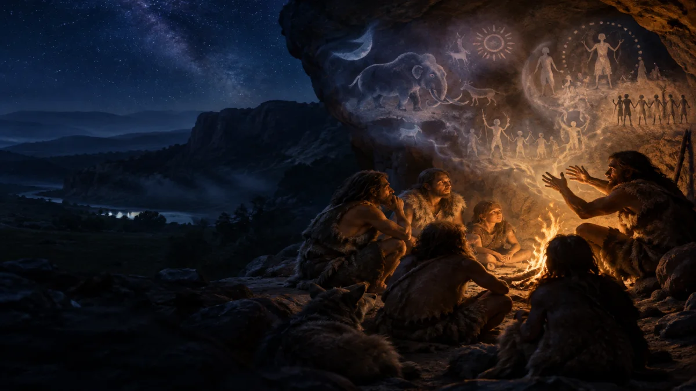
Evidence for ornaments, pigments, complex tools, and flexible behaviour accumulated in several regions. A sudden “cognitive revolution” 70,000 years ago is one interpretation, not proof that human abilities appeared everywhere at once.
Populations of Homo sapiens expanded far beyond Africa, reaching Australia, Eurasia, and eventually the Americas. The movement was not one march or one route; it unfolded through many journeys, encounters, and local adaptations.
The paintings of Chauvet Cave are about 36,000 years old and those at Lascaux about 21,000 years old. Evidence of ornament and visual expression is older still, so art did not suddenly begin in one cave or on one date.
Neanderthals gradually disappear from the fossil record as a distinct population. They interbred with Homo sapiens, and some people today carry Neanderthal DNA. Other human groups did not all vanish at the same moment.
People in East Asia and elsewhere began using fired-clay containers before farming. Cooking and storage expanded the range of usable foods and changed how communities gathered around fire and managed seasonal resources.
Dogs emerged from a long relationship between humans and wolves. When, where, and how domestication happened remain debated; the familiar story of friendly wolves approaching campfires is only one possible pathway.
CHAPTER III
c. 9500 BCE — 27 BCE
Farming, cities, writing, numbers, law, money, and philosophy emerged through different paths. Civilization was never one invention or one region’s story.
Cultivation, domestication, and settled life developed over long periods in Southwest Asia and several other regions. This was not one sudden switch from foraging to farming, but many processes that changed population, health, labour, and land use.
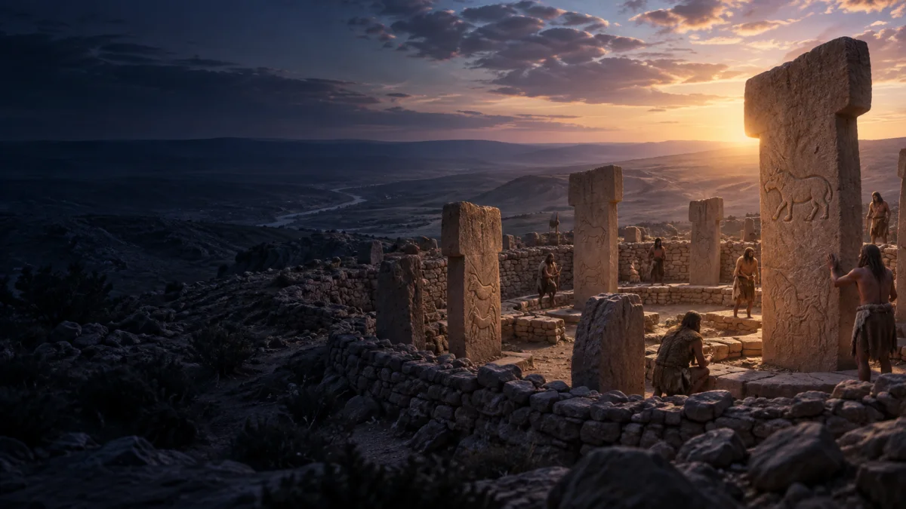
Large stone enclosures were built in what is now southeastern Türkiye. The site is crucial for studying the relationships among foraging, settlement, cultivation, and ritual, but it does not prove the simple claim that temples single-handedly created farming or civilization.
Villages, cultivation, and animal domestication combined at different times and by different routes. Property, specialised work, and inequality did not appear as one package; each changed over time with local environments and institutions.
Communities in dry regions built channels to carry river water to fields. Irrigation supported harvests and population growth, while canal maintenance, land allocation, and salinisation created new problems of cooperation and power.
Uruk became one of the earliest large cities in southern Mesopotamia, linking temples, administration, trade, and record-keeping. What counts as the “first city” depends on definitions of size and institutions, and other regions followed different paths to urban life.
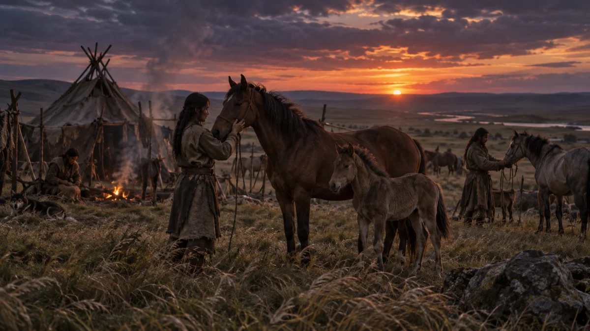
Human relationships with horses deepened across the Eurasian steppe as riding, traction, and pastoralism developed over time. Horses accelerated the movement of people, goods, military power, and information between distant societies.
The crucial invention was not simply a round object but a working wheel-and-axle system. Combined with roads, vehicles, animals, and skilled construction, it transformed transport rather than changing the world by itself.
Alloying copper with tin and other materials produced durable tools, weapons, and ritual objects. Because ores came from distant places, metallurgy encouraged specialised labour and far-reaching trade while concentrating wealth and military power.
Early cuneiform in Mesopotamia grew from systems used to record goods, labour, and obligations. Writing placed memory outside the body and expanded administration, literature, and law—while literacy and control of records remained unevenly distributed.
Dynastic rule developed along the Nile, supported by agriculture, administration, craft, and exchange. Monumental architecture and sacred writing preserve ideas about kingship, death, and eternity, but they show only part of a complex society.
Large cities including Mohenjo-daro developed planned streets, drainage systems, and public buildings. They reveal a South Asian path to urban life and keep the story of civilization from being confined to Mesopotamia and the Mediterranean.
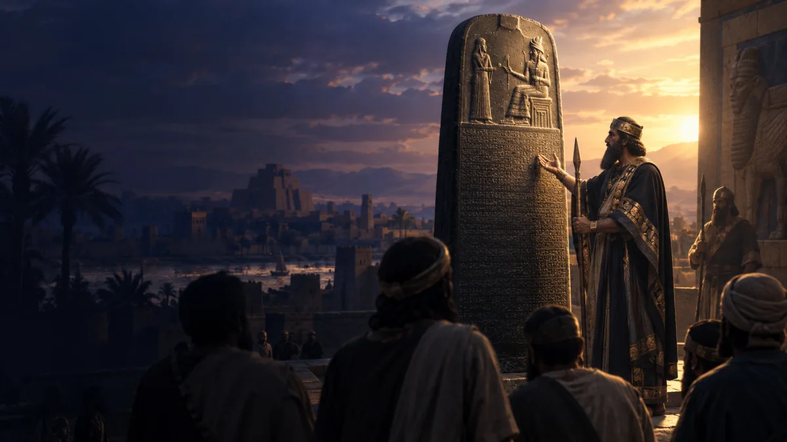
Hammurabi’s laws are among the best-known early written legal collections. They made rules and penalties publicly durable, but they did not establish equality: status, gender, and freedom shaped how the law treated people.
Iron tools and weapons became increasingly widespread in several regions. Iron did not simply replace bronze overnight; new materials, fuels, skills, and trade networks gradually changed farming, craft, and warfare.
Phoenician writing inherited older consonantal traditions and spread through Mediterranean exchange, influencing Greek and later alphabets. It was not the ancestor of every writing system, and alphabets did not automatically make literacy universal.
The “Axial Age” groups major philosophical and religious changes across the first millennium BCE. The thinkers, places, and dates differ greatly; it is a comparative historical theory, not one event that happened everywhere at the same time.
Coins whose weight and value were publicly guaranteed spread around the Mediterranean and in South Asia. They eased exchange, taxation, and military payment while extending the power of states and markets into daily life.
Teachings that emerged in northern India travelled with communities of practice across Asia. As they met local ideas and politics, they transformed ways of understanding suffering, the self, compassion, and liberation.
Athens developed institutions in which male citizens debated and voted directly. Citizenship was sharply limited: women, enslaved people, and resident foreigners were excluded. Its history contains both democratic possibility and structural exclusion.
A placeholder symbol, zero as a number, and formal rules for calculating with it emerged in different stages. In 628 CE the Indian mathematician Brahmagupta described arithmetic involving zero; there was no single instant when zero was invented.
The Qin ruler conquered rival states and established the first unified imperial dynasty in China. Standardised writing, measures, currency, roads, and administration strengthened coordination, while conquest, forced labour, and central control imposed immense costs.
Octavian became Augustus, concentrating power while preserving some republican forms. Roman roads, law, taxation, armies, and water systems connected a vast empire whose expansion also depended on conquest, slavery, and unequal citizenship.
CHAPTER IV
From c. 2nd century BCE — 1517 CE
Paper, faith, scholarship, trade, navigation, disease, and print moved across regions. Slowly but decisively, distant societies became part of increasingly connected worlds.
The Silk Roads were not one road but shifting networks of overland routes and cities across Eurasia. Silk, horses, and glass travelled alongside religions, technologies, art, and pathogens.
Cai Lun was recorded as reporting improvements in papermaking to the Eastern Han court. Paper already existed, so 105 was not the year one person invented it; refinement and diffusion made a light, practical recording medium far more widely available.
Agreements associated with Constantine and Licinius extended toleration to Christianity in the Roman Empire. A persecuted religious movement became increasingly entangled with imperial power and later grew into one of the world’s largest faith communities.
Maya cities in Mesoamerica developed writing, calendars, mathematics, and astronomy within networks of trade and rivalry. They show how complex urban knowledge could flourish without a single unified empire.
Chinese states developed systems for selecting officials through education and examination. The examinations opened paths beyond hereditary rank, while also aligning learning and public service with values defined by the state.
Across Baghdad and a much wider region, knowledge from Greek, Indian, Persian, and other traditions was translated, tested, and extended. Advances in algebra, medicine, and astronomy emerged through long collaboration among people of many cities, languages, and faiths.
Monsoon navigation linked East Africa, West Asia, South Asia, Southeast Asia, and China. Merchants, religions, languages, and crops mixed in port cities, forming a maritime economy long before European expansion into the ocean.
Woodblock printing developed in East Asia, and the Diamond Sutra of 868 survives as an early dated printed book. Reproducible knowledge was travelling widely centuries before Gutenberg.
Chinese experimenters searching for medicinal and alchemical substances discovered combustible mixtures. As gunpowder technologies spread and changed, they transformed warfare, fortifications, and the balance of political power.
Magnetic direction-finding was used for navigation in China and later spread across regions. Sailors could hold a course with less dependence on stars and coastlines, making long voyages across seasons and seas more reliable.
This date symbolises the development of the European university. Claims about the “oldest university” depend on definitions of origin, continuity, and institution, and must be considered alongside older communities of advanced learning in other regions.
English barons compelled King John to accept written limits on royal action. Its immediate promises were narrow, but later generations used the charter to develop the principle that rulers, too, are subject to law.
An empire created through conquest and immense destruction reconnected routes through relay stations and protected trade. Merchants, envoys, technologies, knowledge, and infectious diseases moved across Eurasia on an unprecedented scale.
The Shona-built stone city became a centre in far-reaching networks carrying gold, ceramics, and glass beads. It is essential evidence that the medieval world cannot be understood as a European story alone.
Plague spread across Eurasia and North Africa and caused devastating mortality in Europe from around 1347. Population loss reshaped labour, land, faith, and institutions in complex ways, but it was not a single cause of the Renaissance.
Merchants in Mediterranean cities increasingly recorded transactions as matched debits and credits. The method supported long-distance trade, shared investment, and the measurement of profit and loss, helping organisations manage themselves through numbers.
Printing with reusable metal type expanded dramatically in Europe, changing the reproduction and circulation of books. East Asian woodblock and movable-type traditions came earlier, and the Reformation, science, and education were never effects of printing alone.
Columbus’s voyage accelerated sustained contact and movement across the Atlantic. Plants, animals, pathogens, and people crossed the ocean, while invasion, epidemic disease, forced labour, and the Atlantic slave trade devastated Indigenous societies.
Martin Luther’s Ninety-five Theses became part of a wider movement that fractured western European Christianity. Print accelerated controversy, but political interests, institutional conflict, and demands for reform also shaped the transformation.
CHAPTER V
1492 — 1789 CE
Observation, instruments, mathematics, classification, and public argument challenged inherited authority. New claims about reason and liberty widened human possibility while coexisting with empire, slavery, and exclusion.
Crops, livestock, pathogens, and people moved across the Atlantic, reorganising diets and ecosystems around the world. Foods that supported population growth and diseases that devastated Indigenous societies belonged to the same historical process of contact and conquest.
More than ten million African people were forcibly transported across the Atlantic. Profits from sugar, cotton, finance, and shipping fed modern economies, while racial hierarchy and inequality were built into institutions whose effects persist.
On the Revolutions of the Heavenly Spheres presented a mathematical system in which Earth moved around the Sun. The model did not instantly settle astronomy, but it helped open a long transformation in how evidence, calculation, and humanity’s place in the cosmos were understood.
The Dutch East India Company raised capital from many investors and expanded the trade of transferable shares. The structure distributed the risks of large ventures while embedding colonial domination and violence within corporate activity.
Galileo began telescopic astronomy in 1609 and published observations of the Moon and Jupiter’s moons in 1610; observations of Venus followed. An instrument extended human sight and helped make observation a force capable of changing the accepted picture of the universe.
In the Discourse on Method, René Descartes made disciplined doubt a route toward reliable knowledge. Beginning from the act of thinking itself, his work became one foundation of modern philosophy and debates about mind, body, and certainty.
Isaac Newton expressed laws of motion and universal gravitation mathematically, treating earthly and celestial motion within one framework. The synthesis depended on earlier observations and research, and its history cannot be reduced to a simple conflict between science and religion.
Carl Linnaeus developed a systematic framework for naming and arranging living things. Classification made comparison easier and shaped biology, but it also encouraged the idea that nature—and sometimes human difference—could be fitted into fixed ranked categories.
Edited by Denis Diderot, Jean le Rond d’Alembert, and others, the project published seventeen volumes of text and eleven of plates from 1751 to 1772. It organised and circulated knowledge on a remarkable scale without ever containing all human knowledge.
The declaration asserted human equality and justified the colonies’ separation from Britain. Slavery continued, however, and women, Indigenous peoples, and many others remained outside political rights. The distance between the principle and its practice is part of the turning point.
The collapse of absolute monarchy placed citizenship, popular sovereignty, liberty, and equality at the centre of political struggle. Revolution widened the imaginable scope of rights while also producing exclusion, war, and terror.
CHAPTER VI
1769 — 1903 CE
Steam, factories, electricity, public systems, and new sciences multiplied human power and speed. The same transformation created extraordinary abundance, harsh labour, fossil-fuel dependence, and new struggles over health and rights.
James Watt patented a separate condenser that made earlier steam engines more efficient. Development and adoption took years, but steam power eventually transformed mines, factories, transport, and the scale of fossil-fuel use.
Production increasingly gathered machines and workers inside one building, synchronised by clocks and divided processes. Factories lowered the cost of many goods while reorganising the place, pace, skills, and family rhythms of work.
Edward Jenner tested a method using cowpox exposure to protect against smallpox. Building on older practices of variolation from several regions, vaccination helped establish the idea that disease could be prevented before symptoms began.
Richard Trevithick demonstrated an early steam locomotive; later engineers including George Stephenson made rail transport practical at scale. Travel and freight began to accelerate, shrinking distance and encouraging standardised time.
Born from a revolt of enslaved people, Haiti’s independence joined freedom and racial equality to the creation of a state. It sent powerful consequences through movements against slavery and colonial rule.
Resistance, revolution, escape, and organised abolition movements pushed states toward ending legal slavery in stages. Forced labour, racism, colonial domination, and economic inequality nevertheless continued in altered forms.
Electrical telegraph systems moved toward practical use, radically changing the speed and reach of long-distance communication. Earlier optical systems had already sent information faster than people or horses, but electricity separated messages from physical transport on a new scale.
A public operation using ether showed that complex surgery could be performed without overwhelming pain. Several earlier uses existed, and safer anaesthesia still required advances in drugs, monitoring, technique, and medical ethics.
Water supply, sewerage, waste removal, and disease surveillance reduced deaths from infectious disease in growing cities. Health increasingly became a question of shared environments and public institutions, not only individual treatment.
Charles Darwin presented extensive evidence that species change over time and argued that natural selection helps explain adaptation. Evolution reshaped biology and humanity’s view of itself, though Darwin was not the only thinker developing evolutionary ideas.
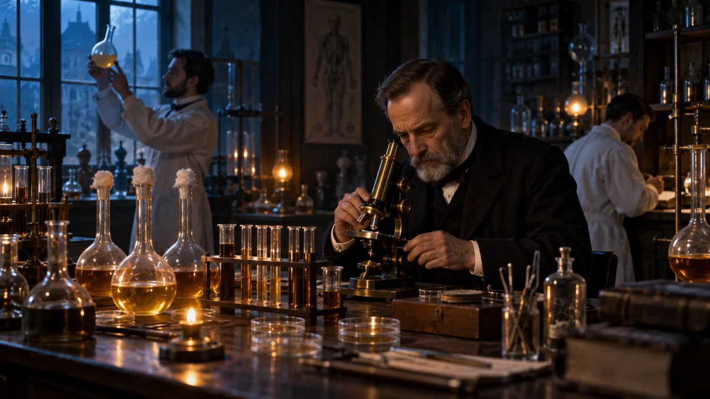
Research associated with Louis Pasteur, Robert Koch, and others demonstrated that specific microorganisms were involved in fermentation and disease. Germ theory linked disinfection, testing, prevention, and food safety to causes invisible to the naked eye.
Public education systems expanded access to reading, writing, and arithmetic. Schooling supported civic participation and industrial society while also teaching official languages, discipline, and state-defined national identities.
Gregor Mendel’s pea experiments revealed statistical patterns in the inheritance of traits. His work was little recognised at first, but its later rediscovery helped make genes and heredity central to modern biology.
Dmitri Mendeleev arranged elements by recurring chemical properties and left spaces for elements not yet discovered. Classification became predictive: the pattern suggested what evidence the world should still contain.
Alexander Graham Bell received a major telephone patent amid work by several inventors. Spoken voices could now travel through wires, creating a new kind of real-time presence between distant people.
Through improvements by many inventors and firms, Edison and others advanced durable incandescent lamps together with generation and distribution systems. The decisive change was not one bulb but an expanding electrical network that altered the timing of work and daily life.
Through unions, strikes, elections, and organising, workers demanded limits on hours as well as better wages, safety, and rest. The division of a day into eight hours for work, eight for rest, and eight for one’s own life gradually became a social institution.
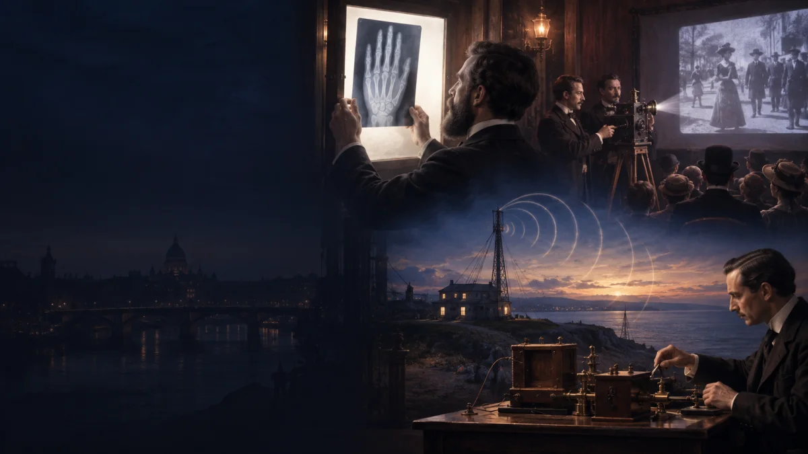
X-rays, cinema, and wireless communication each had distinct histories of research and practical use. Rather than treating them as three inventions of one year, this moment reveals overlapping shifts in seeing the invisible, sharing moving images, and transmitting without wires.
A twelve-second flight covered about 36 metres, combining power, lift, and control. Continued engineering transformed that brief demonstration into aviation capable of crossing continents—and later carrying humans beyond Earth.
CHAPTER VII
1893 — 1968 CE
Relativity, quantum theory, mass media, industrial war, computing, human rights, and decolonisation overturned old assumptions. Knowledge expanded human possibility—and amplified the power to control, exclude, and destroy.
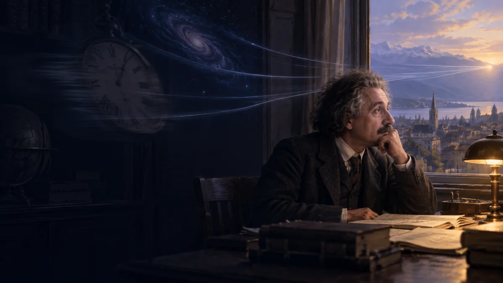
Albert Einstein showed that measurements of time and space depend on relative motion while the speed of light remains constant. The familiar idea of one absolute time gave way to spacetime relations that later became essential to modern physics and technology.
Industrial synthesis turned atmospheric nitrogen into ammonia at large scale. Fertiliser supported food production and population growth, while the same chemistry served warfare and increased fossil-fuel use, water pollution, and disruption of the nitrogen cycle.
After long movements in many countries, women gained voting rights and wider political participation. Timing and inclusion differed sharply, and exclusions based on race, class, and colonial status continued after formal suffrage.
Industrial capacity was directed toward mass warfare through machine guns, artillery, chemical weapons, tanks, aircraft, and vast mobilisation. Millions of soldiers and civilians died, empires collapsed, and borders were redrawn with consequences that lasted for generations.
Einstein described gravity as the curvature of spacetime rather than a conventional force. The theory reshaped cosmology and the study of black holes, and corrections based on relativity are now necessary for systems such as GPS.
The imperial regime collapsed and the Bolsheviks took power. The creation of a socialist state transformed global arguments about labour, ownership, and equality while also developing into a system of one-party rule and repression.
The same news, music, stories, and advertising could reach millions at once. Mass media created shared culture and new public discussion while giving governments and corporations powerful tools for propaganda and persuasion.
In quantum mechanics, pairs such as position and momentum cannot both be assigned arbitrarily precise values in the same state. This is not merely a limit of measuring instruments; it is a principle about how quantum states can be described.
Alexander Fleming observed the antibacterial effect of mould. Turning that observation into a purified, tested, mass-produced medicine required later teams and wartime development in the 1940s. Longer lifespans also depended on sanitation, nutrition, and many other changes.
Financial crisis, business failure, unemployment, and collapsing trade spread internationally. The belief that markets alone could protect livelihoods weakened, and public works, social insurance, financial regulation, and other state responsibilities expanded.
Alan Turing described a mathematical model of a machine that follows symbolic rules step by step. The paper clarified what it means for a problem to be computable and provided one of the conceptual foundations of general-purpose computers.
The deadliest war in history combined territorial conquest, genocide, strategic bombing, mass displacement, and total mobilisation. Radar, rockets, medicine, and computing advanced rapidly inside a system of destruction whose human costs cannot be reduced to technological progress.
Atomic bombs destroyed the two cities and killed tens of thousands immediately, with many more deaths and illnesses following. Humanity had created weapons capable of annihilation, permanently joining questions of scientific capability to political responsibility and ethics.
ENIAC used thousands of vacuum tubes for high-speed electronic calculation. Because “first computer” depends on purpose, electronics, programmability, and architecture, it is best understood as one of the earliest general-purpose electronic digital computers.
Researchers at Bell Laboratories demonstrated a small semiconductor device that could amplify and switch electrical signals. Transistors replaced many vacuum-tube functions and became the foundation of integrated circuits, microchips, and modern electronics.
Claude Shannon mathematically defined information transmitted through a noisy channel, establishing foundations for coding, compression, and digital communication. The earlier coining of the word “bit” should be distinguished from Shannon’s systematic theory.
After the devastation of the Second World War, the United Nations adopted a common standard affirming that all people are born free and equal in dignity and rights. Its incomplete realisation is part of its significance as a global moral and political commitment.
Instead of defining whether machines “think,” Alan Turing proposed an imitation game based on whether a machine could sustain text conversation indistinguishable from a person. The thought experiment shaped artificial intelligence without becoming a complete definition of intelligence.
A double-helix model was proposed using evidence including X-ray diffraction data. Understanding the discovery requires the different contributions of James Watson, Francis Crick, Rosalind Franklin, Maurice Wilkins, and others—as well as the contested use of data.
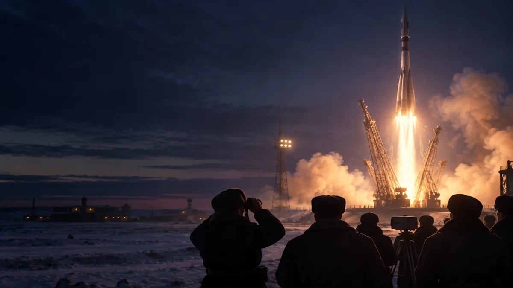
The Soviet Union launched the first artificial satellite. The achievement intensified the Cold War space race, expanded investment in science and engineering, and helped begin an infrastructure of satellites that now shapes communication, navigation, weather, and observation.
Amid independence movements across Africa, Asia, and elsewhere, the United Nations adopted its declaration on granting independence to colonial countries and peoples. An empire-centred world order gave way—unevenly—to one organised around sovereign states and self-determination.
Led especially by Black Americans, protest, litigation, civil disobedience, and voter organising dismantled legal racial segregation in the United States. The movement also confronted structural inequality in education, housing, work, policing, and political power.
Apollo 8’s photograph of Earth above the lunar horizon became a symbol of one finite and shared planet. Environmental movements had many older roots, so the image was not their single beginning; it gave an existing planetary awareness an unforgettable form.
CHAPTER VIII
1969 — 2001 CE
Computing power moved from institutions toward individual desks while networks connected machines, documents, and people. Digital openness grew alongside new concentrations of power, global risks, and demands for shared knowledge.
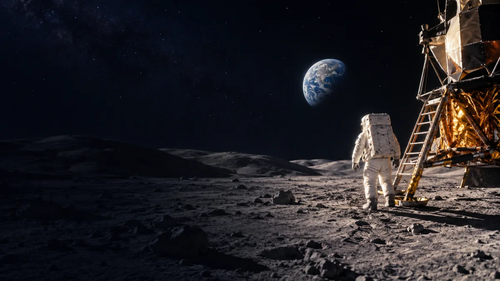
Humans stood on another celestial body for the first time. The achievement depended on vast public investment, computing, engineering, global tracking, and Cold War competition—not only the actions of the astronauts visible on the lunar surface.
On 29 October, a message sent from UCLA to SRI stopped after the letters “LO” of LOGIN. By December four sites were connected. ARPANET was one foundation of the later internet, whose creation required many further protocols, networks, institutions, and communities.
The Intel 4004 integrated the main functions of a central processing unit onto a single commercial chip. Continued advances in semiconductor design and manufacturing made computers smaller, cheaper, faster, and increasingly embedded in everyday objects.
The founding of Microsoft and Apple formed part of a wider market taking shape around computers for individuals. Hobbyists, research institutions, chip firms, software developers, retailers, and many manufacturers all helped move computing beyond large organisations.
The United Nations General Assembly adopted an international treaty requiring states to address discrimination against women. The convention moved beyond a declaration of rights toward legal commitments that participating governments were expected to implement.
After sustained vaccination, surveillance, and local public-health work, the World Health Organization declared smallpox eradicated. It remains a rare example of science and international cooperation eliminating a human infectious disease worldwide.
IBM’s entry helped standardise a platform whose compatible machines spread rapidly through offices, schools, and homes. The importance of the IBM PC lay not in being the first personal computer, but in the ecosystem of hardware and software that grew around it.
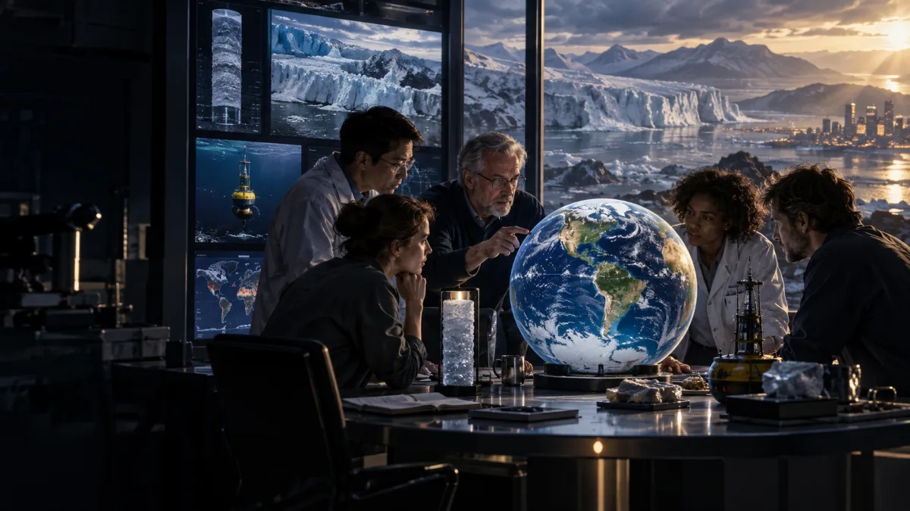
International scientific assessments and negotiations developed a common framework for understanding human-caused warming. Responsibility for emissions and vulnerability to impacts remain profoundly unequal across regions, generations, and communities.
The physical and political symbol of a divided Europe opened amid peaceful protest and rapid change. German reunification followed in 1990 and the Soviet Union dissolved in 1991, ending one Cold War order without ending history or ideological conflict.
At CERN, Tim Berners-Lee proposed a system of linked documents using technologies that became URLs, HTTP, and HTML. The Web was built on top of the internet, making navigation and publishing accessible in a new way rather than creating the internet itself.
Linus Torvalds released a freely shareable operating-system kernel that grew through global collaboration with the GNU system and other projects. Linux became a major example of open-source development and later powered servers, phones, embedded devices, and supercomputers.
Browsers, directories and search services, commercial internet access, and online retail spread quickly. Windows 95, Yahoo, and Amazon played different roles and began at different times; the consumer Web was an ecosystem, not one invention in one year.
A search engine using links as signals of relevance made a rapidly expanding Web easier to navigate. Search changed how people approached knowledge, while ranking, advertising, data collection, and platform power increasingly shaped what information became visible.
Wikipedia’s launch and the September 11 attacks happened in the same year but had no causal relationship. Placing them side by side offers a way to compare collaborative knowledge-building with transformations in terrorism, war, surveillance, and security.
CHAPTER IX
2003 — 2011 CE
Genomes, smartphones, social networks, and online video changed the distance between people and information. Connection became immediate and portable, while platforms, financial systems, and technological risks revealed new forms of dependence.
The international project concluded after releasing what was then described as a nearly complete human reference genome sequence, covering about 92 percent of it. Remaining gaps were filled in 2022, and no single reference sequence represents the full diversity of humanity.
What began as a directory for university students expanded into a global social platform. Friendship and social connection became visible, countable, and increasingly shaped by profiles, feeds, advertising, and recommendation systems.
Uploading and watching online video became accessible to a mass audience. People outside traditional broadcasters could publish globally, while attention, advertising, copyright, moderation, and recommendation algorithms became central to the new media environment.
Short posts made real-time public conversation easier to follow and join. News, eyewitness reports, activism, humour, harassment, and misinformation could all move at unprecedented speed through the same network.
Apple combined a phone, internet device, music player, and camera behind a multi-touch screen. Smartphones already existed, but the iPhone and the wider app ecosystem helped make pocket computing a dominant interface for everyday life.
Failures originating in the United States housing and securitisation markets spread through financial institutions and tightened credit worldwide. Regulation, excessive debt, risk assessment, incentives, and complex financial products interacted; financial engineering alone was not a single cause.
Under the name Satoshi Nakamoto, an unknown author or group proposed a peer-to-peer electronic cash system that could operate without a central bank. Its blockchain design joined earlier work in cryptography and distributed systems, opening a new debate about money, trust, energy, and governance.
The earthquake and tsunami caused immense loss of life and triggered the Fukushima Daiichi nuclear accident. The disaster exposed the fragility of technological systems while mobile networks and social media also became vital channels for warnings, rescue, and shared information.
A system combining question analysis, information retrieval, and candidate ranking defeated two human champions on the American quiz show. It was a major achievement on a constrained task, not proof of human-like language understanding in general.
CHAPTER X
2012 — the present
Seeing, speaking, writing, creating, and planning began to shift from demonstrations in narrow settings toward tools used in everyday life. These systems extend human capability while raising urgent questions about evidence, labour, rights, safety, responsibility, and power.
A deep convolutional neural network won the ImageNet image-recognition competition by a striking margin. Better algorithms, large labelled datasets, and graphics processors combined to accelerate a field that had developed over many decades.
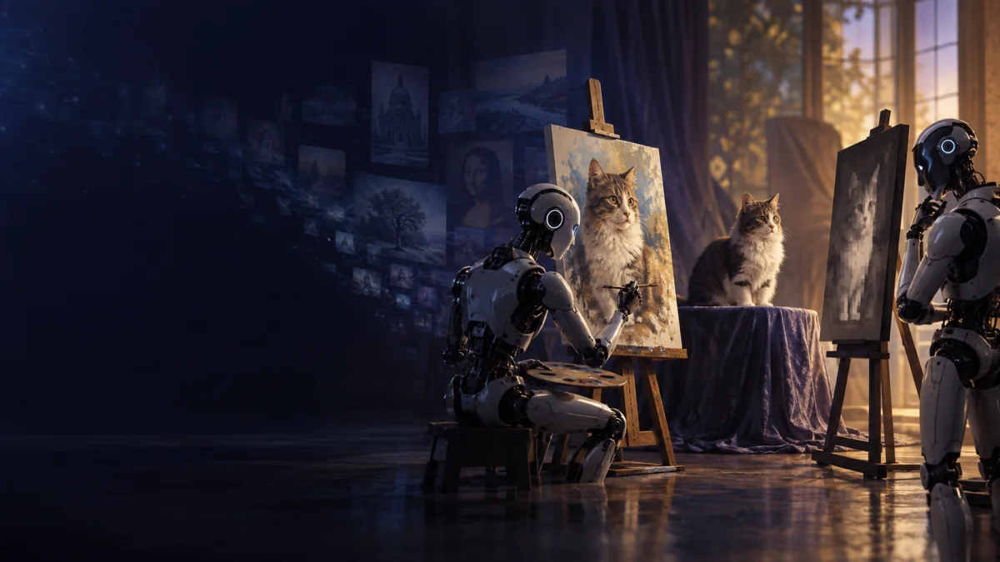
A generative model and a discriminator were trained in competition, allowing increasingly realistic synthetic images to emerge. GANs opened new creative possibilities while making questions about authenticity, consent, and manipulated media more urgent.
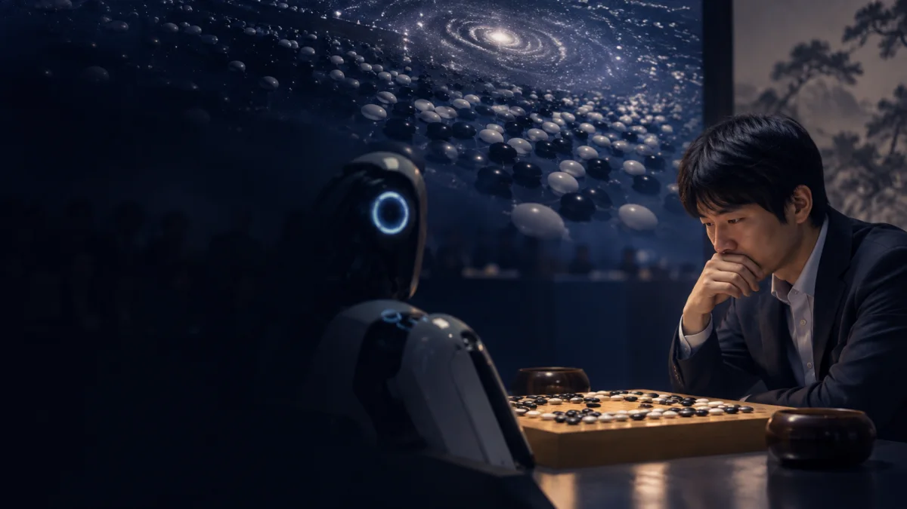
AlphaGo won four games to one against the nine-dan Go champion Lee Sedol. By combining deep neural networks with tree search, it achieved a major result on one difficult game—not evidence that AI had surpassed humanity in every kind of intelligence.
The paper “Attention Is All You Need” proposed an architecture centred on attention mechanisms. Transformers profoundly influenced large language models and many other fields, although not every modern AI system uses the same design.
Google’s BERT and OpenAI’s GPT-1 demonstrated the power of language models pretrained on large collections of text and then adapted to many tasks. Their different architectures helped establish pretraining as a central approach in natural-language processing.
On 11 March 2020, the World Health Organization characterised COVID-19 as a pandemic. Infection, death, and overwhelmed health systems were accompanied by remote work, online education, rapid vaccine development, and stark inequalities in exposure and access.
A language model with 175 billion parameters showed that one pretrained system could perform many text tasks from instructions and a few examples in context. This did not mean the model retrained its weights during a conversation or understood language in the same way humans do.
A conversational interface brought generative AI to a broad public and rapidly expanded experiments in work, education, programming, and creativity. Fluency made the technology approachable while also making errors and unsupported answers easier to mistake for knowledge.
Image-generation services reached mass audiences in 2022, and systems offering image input or voice conversation appeared in 2023. Understanding and generating text, images, audio, and video are distinct capabilities; they did not all mature at once.
Developers announced and released increasingly capable video generators and models that used more computation before answering. Product demonstrations must be distinguished from general availability, and the phrase “reasoning model” does not prove an inner thought process identical to a human one.
More AI services began using browsers, coding environments, and other tools to carry out multistep tasks. Rather than declaring a fixed beginning to an “agent age,” this remains an evolving field whose capability, autonomy, reliability, and safety require continued testing.
AI use is spreading through learning, work, creativity, health, and daily life while accuracy, rights, safety, responsibility, environmental cost, and inequality remain contested. This is not a settled turning point from the past; it is an unfinished present in which the reader is participating.
CHAPTER XI
The 2030s — ?
From here on, this is no longer a timeline of established events. These are scenarios for thinking. Their dates are examples, not forecasts of when—or whether—any scenario will become reality.
There is no agreed definition of AGI and no agreed date for its arrival. The 2030s is one example among many forecasts, not a schedule. This scenario asks what would count as generality, capability, and safety—and who would make those judgements.
Gene editing, synthetic biology, and brain–computer interfaces are already being researched and used at different stages. The 2040s is not a fixed date, but a prompt for examining the boundaries between treatment and enhancement, consent and coercion, access and inequality.
The year 2045 comes from a forecast associated with Ray Kurzweil, not a deadline established by scientific consensus. Treat it as a hypothesis: under what conditions could capability improvements become self-reinforcing, could such a process be measured, and could society govern it?
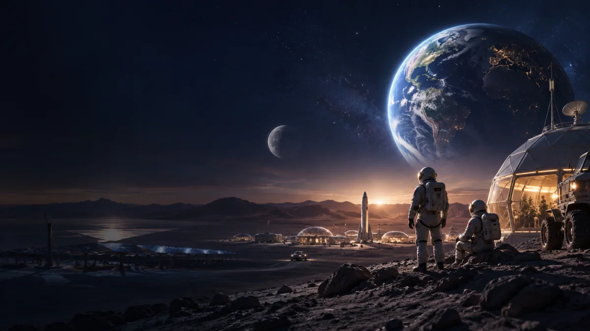
Long-term settlement on the Moon or Mars still faces unresolved questions of life support, health, resources, law, and cost. The year 2100 is not a prediction of completion. It is a scenario for comparing the meaning of expansion into space with our responsibility to remain capable of living on Earth.
What comes next has not yet been written. What should be added—and what should be preserved—is a question for those alive today and for generations still to come. Manabi Map will keep searching for tools that help us ask those questions well.
THE MAP REMAINS OPEN
These 160 points are not the only possible history. Change the lens, notice what is missing, and use AI as a partner for building the next question—not as an authority that closes it.